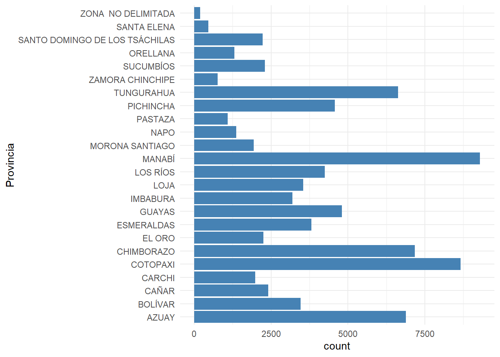
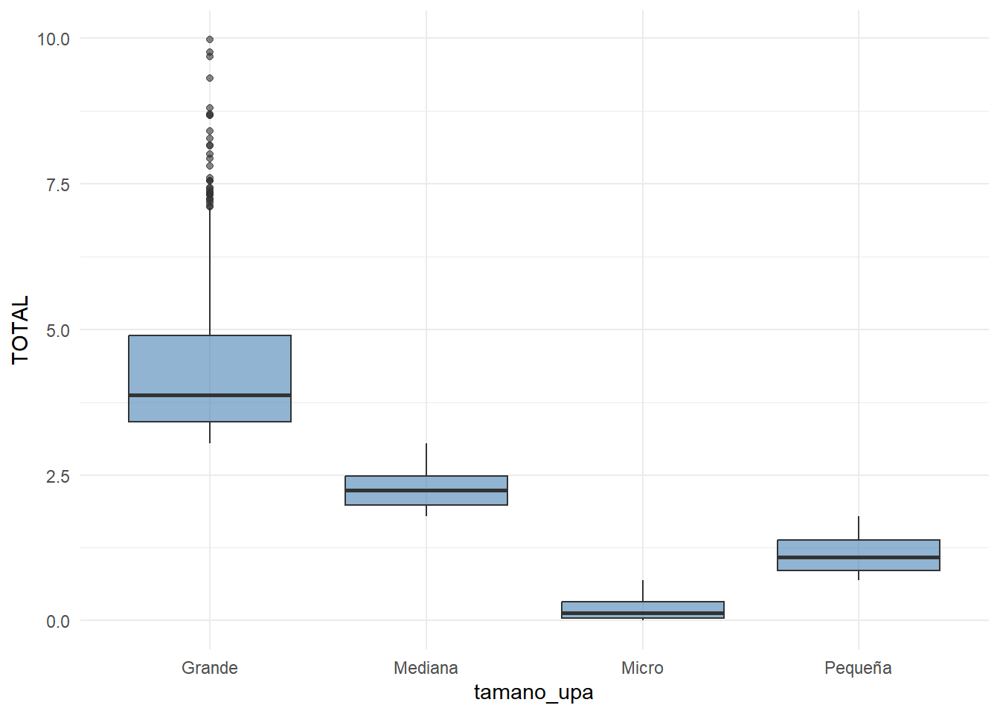
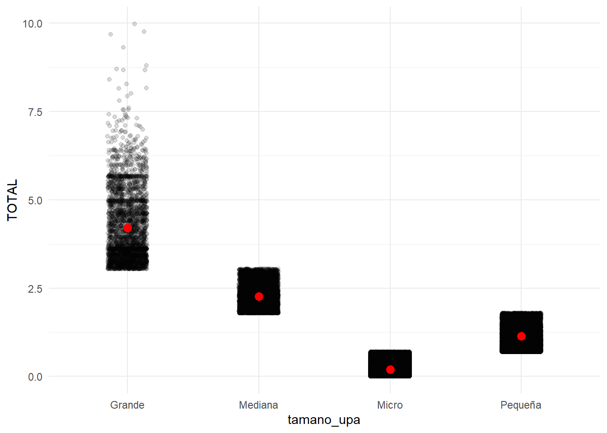
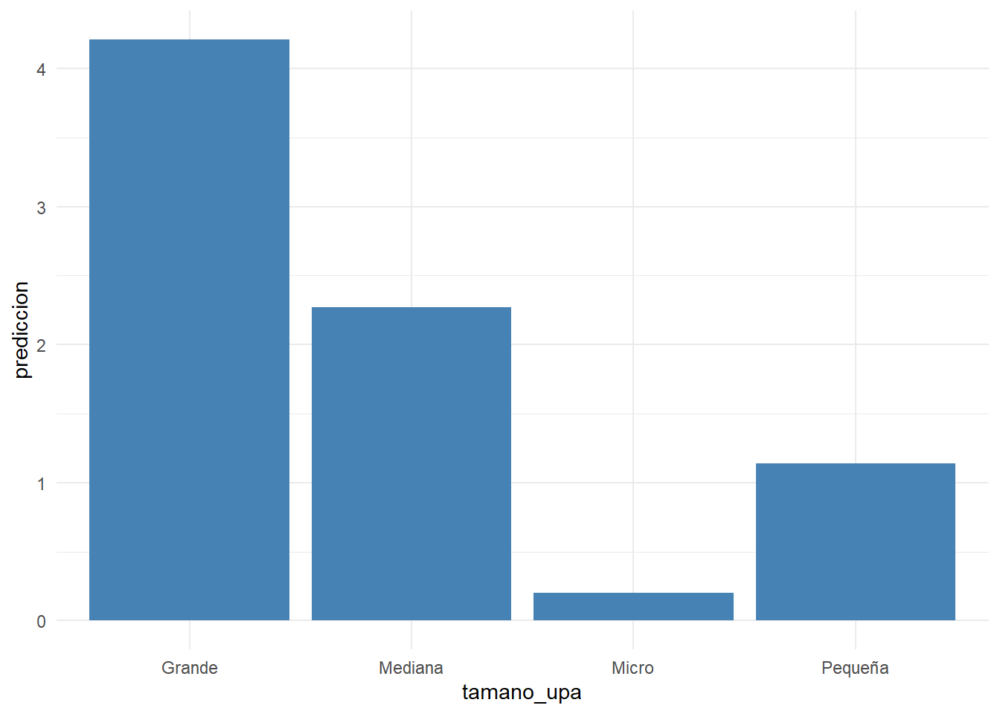
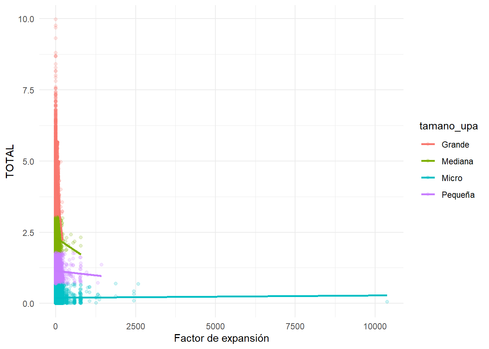

library(tidyverse)
library(ggplot2)
library(broom)
library(knitr)
library(here)26 Variables categóricas
Objetivos de aprendizaje
Al finalizar esta sección, el lector será capaz de:
- Comprender qué son las variables categóricas.
- Diferenciar variables numéricas y categóricas.
- Entender el concepto de variable dummy.
- Utilizar factores en R.
- Identificar categorías de referencia.
- Preparar variables categóricas para modelos de regresión.
26.1 Introducción
Hasta ahora hemos trabajado principalmente con variables numéricas. Sin embargo, gran parte de la información utilizada en investigación corresponde a categorías.
Algunos ejemplos son:
Provincia
Sexo
Nivel educativo
Estado civil
Tamaño de UPAEstas variables contienen información relevante para explicar fenómenos económicos, sociales y ambientales.
La regresión lineal permite incorporar variables categóricas mediante procesos de codificación automática conocidos como variables dummy o indicadoras (Montgomery et al., 2021).
26.2 Cargando librerías
26.3 Cargando la base analítica
base_analitica <- readRDS(
here(
"datos",
"procesado",
"ESPAC_2025",
"sunac_transformado.rds"
)
)26.4 Preparación de variables
base_categorias <- base_analitica |>
mutate(
log_supertotal =
log1p(
supertotal
),
provincia =
as.factor(
provincia
),
tamano_upa =
as.factor(
tamano_upa
)
) |>
select(
log_supertotal,
provincia,
tamano_upa,
fact_exp_fin
) |>
drop_na()26.5 Identificando variables categóricas
glimpse(
base_categorias
)Rows: 84,538
Columns: 4
$ log_supertotal <dbl> 1.324844399, 0.564233680, 1.823597226, 0.251692135, 1.2…
$ provincia <fct> AZUAY, AZUAY, AZUAY, AZUAY, AZUAY, AZUAY, AZUAY,…
$ tamano_upa <fct> Pequeña, Micro, Mediana, Micro, Pequeña, Micro, Pequeña…
$ fact_exp_fin <dbl> 66.37009, 66.37009, 66.37009, 66.37009, 66.37009, 66.37…Interpretación
Las variables provincia y tamano_upa aparecen como factores. Esto indica que R las reconocerá automáticamente como variables categóricas.
26.6 Frecuencia de categorías
base_categorias |>
count(
provincia
) |>
arrange(
desc(n)
) |>
kable(
caption = "Frecuencia de observaciones por provincia"
)| provincia | n |
|---|---|
| MANABÍ | 9294 |
| COTOPAXI | 8664 |
| CHIMBORAZO | 7175 |
| AZUAY | 6883 |
| TUNGURAHUA | 6628 |
| GUAYAS | 4801 |
| PICHINCHA | 4570 |
| LOS RÍOS | 4241 |
| ESMERALDAS | 3815 |
| LOJA | 3549 |
| BOLÍVAR | 3463 |
| IMBABURA | 3198 |
| CAÑAR | 2403 |
| SUCUMBÍOS | 2299 |
| EL ORO | 2252 |
| SANTO DOMINGO DE LOS TSÁCHILAS | 2220 |
| CARCHI | 1981 |
| MORONA SANTIAGO | 1940 |
| NAPO | 1362 |
| ORELLANA | 1301 |
| PASTAZA | 1089 |
| ZAMORA CHINCHIPE | 767 |
| SANTA ELENA | 455 |
| ZONA NO DELIMITADA | 188 |
Interpretación
La tabla muestra la distribución de observaciones entre categorías territoriales.
26.7 Visualización de categorías
ggplot(
base_categorias,
aes(
x = provincia
)
) +
geom_bar(
fill = "steelblue"
) +
coord_flip() +
theme_minimal()
Interpretación
El gráfico permite identificar diferencias en el tamaño relativo de las categorías.
26.8 ¿Por qué no usar texto directamente?
Los modelos matemáticos operan con números.
Por esta razón, una variable como:
Loja
Pichincha
Guayasdebe transformarse internamente en indicadores numéricos.
R realiza este procedimiento automáticamente mediante factores.
26.9 Variables dummy
Una variable dummy toma únicamente dos valores:
1 = pertenece a la categoría
0 = no pertenece a la categoríaPor ejemplo:
Provincia = Lojapodría representarse como:
Loja = 1
Otra provincia = 026.10 Ejemplo simple de dummy
base_categorias |>
mutate(
dummy_loja =
if_else(
provincia == "Loja",
1,
0
)
) |>
select(
provincia,
dummy_loja
) |>
slice_head(
n = 10
) |>
kable(
caption = "Ejemplo de variable dummy"
)| provincia | dummy_loja |
|---|---|
| AZUAY | 0 |
| AZUAY | 0 |
| AZUAY | 0 |
| AZUAY | 0 |
| AZUAY | 0 |
| AZUAY | 0 |
| AZUAY | 0 |
| AZUAY | 0 |
| AZUAY | 0 |
| AZUAY | 0 |
Interpretación
La nueva variable identifica observaciones pertenecientes a la provincia de Loja.
26.11 Categoría de referencia
Cuando una variable posee múltiples categorías, R selecciona automáticamente una categoría base.
Por ejemplo:
Loja
Pichincha
Guayas
AzuayUna categoría será utilizada como referencia y las demás serán comparadas contra ella.
26.12 Niveles del factor
tibble(
Categoria =
levels(
base_categorias$provincia
)
) |>
kable(
caption = "Niveles del factor provincia"
)| Categoria |
|---|
| AZUAY |
| BOLÍVAR |
| CAÑAR |
| CARCHI |
| COTOPAXI |
| CHIMBORAZO |
| EL ORO |
| ESMERALDAS |
| GUAYAS |
| IMBABURA |
| LOJA |
| LOS RÍOS |
| MANABÍ |
| MORONA SANTIAGO |
| NAPO |
| PASTAZA |
| PICHINCHA |
| TUNGURAHUA |
| ZAMORA CHINCHIPE |
| SUCUMBÍOS |
| ORELLANA |
| SANTO DOMINGO DE LOS TSÁCHILAS |
| SANTA ELENA |
| ZONA NO DELIMITADA |
Interpretación
La primera categoría suele actuar como referencia en los modelos lineales.
26.13 Cambio de categoría de referencia
En ocasiones resulta conveniente seleccionar explícitamente la categoría base.
base_categorias <- base_categorias |>
mutate(
provincia =
relevel(
provincia,
ref = levels(
provincia
)[1]
)
)26.14 Verificación de referencia
tibble(
Categoria_Referencia =
levels(
base_categorias$provincia
)[1]
) |>
kable(
caption = "Categoría de referencia utilizada"
)| Categoria_Referencia |
|---|
| AZUAY |
Interpretación
Todos los coeficientes asociados a provincia serán interpretados respecto a esta categoría.
26.15 Matriz de diseño
La función model.matrix() permite observar la codificación interna utilizada por R.
model.matrix(
~ provincia,
data = base_categorias
) |>
as.data.frame() |>
slice_head(
n = 10
) |>
kable(
caption = "Matriz de diseño para provincia"
)| (Intercept) | provinciaBOLÍVAR | provinciaCAÑAR | provinciaCARCHI | provinciaCOTOPAXI | provinciaCHIMBORAZO | provinciaEL ORO | provinciaESMERALDAS | provinciaGUAYAS | provinciaIMBABURA | provinciaLOJA | provinciaLOS RÍOS | provinciaMANABÍ | provinciaMORONA SANTIAGO | provinciaNAPO | provinciaPASTAZA | provinciaPICHINCHA | provinciaTUNGURAHUA | provinciaZAMORA CHINCHIPE | provinciaSUCUMBÍOS | provinciaORELLANA | provinciaSANTO DOMINGO DE LOS TSÁCHILAS | provinciaSANTA ELENA | provinciaZONA NO DELIMITADA |
|---|---|---|---|---|---|---|---|---|---|---|---|---|---|---|---|---|---|---|---|---|---|---|---|
| 1 | 0 | 0 | 0 | 0 | 0 | 0 | 0 | 0 | 0 | 0 | 0 | 0 | 0 | 0 | 0 | 0 | 0 | 0 | 0 | 0 | 0 | 0 | 0 |
| 1 | 0 | 0 | 0 | 0 | 0 | 0 | 0 | 0 | 0 | 0 | 0 | 0 | 0 | 0 | 0 | 0 | 0 | 0 | 0 | 0 | 0 | 0 | 0 |
| 1 | 0 | 0 | 0 | 0 | 0 | 0 | 0 | 0 | 0 | 0 | 0 | 0 | 0 | 0 | 0 | 0 | 0 | 0 | 0 | 0 | 0 | 0 | 0 |
| 1 | 0 | 0 | 0 | 0 | 0 | 0 | 0 | 0 | 0 | 0 | 0 | 0 | 0 | 0 | 0 | 0 | 0 | 0 | 0 | 0 | 0 | 0 | 0 |
| 1 | 0 | 0 | 0 | 0 | 0 | 0 | 0 | 0 | 0 | 0 | 0 | 0 | 0 | 0 | 0 | 0 | 0 | 0 | 0 | 0 | 0 | 0 | 0 |
| 1 | 0 | 0 | 0 | 0 | 0 | 0 | 0 | 0 | 0 | 0 | 0 | 0 | 0 | 0 | 0 | 0 | 0 | 0 | 0 | 0 | 0 | 0 | 0 |
| 1 | 0 | 0 | 0 | 0 | 0 | 0 | 0 | 0 | 0 | 0 | 0 | 0 | 0 | 0 | 0 | 0 | 0 | 0 | 0 | 0 | 0 | 0 | 0 |
| 1 | 0 | 0 | 0 | 0 | 0 | 0 | 0 | 0 | 0 | 0 | 0 | 0 | 0 | 0 | 0 | 0 | 0 | 0 | 0 | 0 | 0 | 0 | 0 |
| 1 | 0 | 0 | 0 | 0 | 0 | 0 | 0 | 0 | 0 | 0 | 0 | 0 | 0 | 0 | 0 | 0 | 0 | 0 | 0 | 0 | 0 | 0 | 0 |
| 1 | 0 | 0 | 0 | 0 | 0 | 0 | 0 | 0 | 0 | 0 | 0 | 0 | 0 | 0 | 0 | 0 | 0 | 0 | 0 | 0 | 0 | 0 | 0 |
Interpretación
Cada columna representa una variable dummy generada automáticamente.
26.16 Conclusión práctica
En esta primera parte aprendimos a:
- Identificar variables categóricas.
- Trabajar con factores.
- Comprender variables dummy.
- Interpretar categorías de referencia.
- Visualizar la codificación utilizada por R.
En la siguiente sección incorporaremos estas variables dentro de modelos de regresión y aprenderemos a interpretar correctamente los coeficientes asociados a categorías.
26.17 Introducción
Una vez comprendida la lógica de las variables dummy, podemos incorporarlas directamente dentro de modelos de regresión.
La principal ventaja consiste en que podemos cuantificar diferencias promedio entre grupos utilizando un único modelo estadístico (Montgomery et al., 2021).
En esta sección utilizaremos la variable categórica:
tamano_upapara explicar variaciones en:
log_supertotal26.18 Cargando librerías
library(tidyverse)
library(ggplot2)
library(broom)
library(knitr)
library(here)26.19 Cargando la base analítica
base_analitica <- readRDS(
here(
"datos",
"procesado",
"ESPAC_2025",
"sunac_transformado.rds"
)
)26.20 Preparación de variables
base_categorias <- base_analitica |>
mutate(
log_supertotal =
log1p(
supertotal
),
tamano_upa =
as.factor(
tamano_upa
)
) |>
select(
log_supertotal,
tamano_upa
) |>
drop_na()26.21 Exploración inicial
base_categorias |>
group_by(
tamano_upa
) |>
summarise(
n = n(),
media =
mean(
log_supertotal
),
.groups = "drop"
) |>
kable(
digits = 3,
caption = "Promedio de superficie por categoría"
)| tamano_upa | n | media |
|---|---|---|
| Grande | 3106 | 4.210 |
| Mediana | 6846 | 2.270 |
| Micro | 56572 | 0.200 |
| Pequeña | 18014 | 1.137 |
Interpretación
Las medias sugieren diferencias entre categorías de tamaño. La regresión permitirá cuantificar estas diferencias formalmente.
26.22 Visualización preliminar
ggplot(
base_categorias,
aes(
x = tamano_upa,
y = log_supertotal
)
) +
geom_boxplot(
fill = "steelblue",
alpha = 0.6
) +
theme_minimal()
Interpretación
Las diferencias observadas sugieren que el tamaño de la UPA podría estar asociado con la superficie total.
26.23 Modelo con variable categórica
modelo_cat <- lm(
log_supertotal ~
tamano_upa,
data = base_categorias
)26.24 Resumen del modelo
glance(
modelo_cat
) |>
select(
r.squared,
adj.r.squared,
statistic,
p.value
) |>
kable(
digits = 4,
caption = "Resumen del modelo categórico"
)| r.squared | adj.r.squared | statistic | p.value |
|---|---|---|---|
| 0.9037 | 0.9036 | 264286.8 | 0 |
Interpretación
El modelo evalúa si existen diferencias sistemáticas entre categorías de tamaño.
26.25 Coeficientes estimados
tidy(
modelo_cat,
conf.int = TRUE
) |>
kable(
digits = 4,
caption = "Coeficientes del modelo"
)| term | estimate | std.error | statistic | p.value | conf.low | conf.high |
|---|---|---|---|---|---|---|
| (Intercept) | 4.2097 | 0.0054 | 774.8425 | 0 | 4.1990 | 4.2203 |
| tamano_upaMediana | -1.9395 | 0.0066 | -296.0839 | 0 | -1.9523 | -1.9267 |
| tamano_upaMicro | -4.0094 | 0.0056 | -718.5223 | 0 | -4.0204 | -3.9985 |
| tamano_upaPequeña | -3.0726 | 0.0059 | -522.3150 | 0 | -3.0842 | -3.0611 |
Interpretación
El intercepto representa la media esperada para la categoría de referencia.
Los demás coeficientes representan diferencias respecto a dicha categoría.
26.26 Interpretación del intercepto
Supongamos que la categoría de referencia es:
PequeñaEntonces:
Interceptorepresenta el valor promedio esperado de:
log_supertotalpara las UPA pequeñas.
26.27 Interpretación de una categoría adicional
Si observamos:
tamano_upaMediana = 0.45la interpretación sería:
Las UPA medianas presentan en promedio
0.45 unidades más en log_supertotal
que las UPA pequeñas.26.28 Valores ajustados
base_categorias <- base_categorias |>
mutate(
ajustado =
fitted(
modelo_cat
)
)26.29 Comparación observado versus ajustado
ggplot(
base_categorias,
aes(
x = tamano_upa,
y = log_supertotal
)
) +
geom_jitter(
alpha = 0.15,
width = 0.15
) +
stat_summary(
fun = mean,
geom = "point",
color = "red",
size = 3
) +
theme_minimal()
Interpretación
Los puntos rojos representan las medias estimadas por el modelo para cada categoría.
26.30 Comparación mediante ANOVA
Cuando todas las variables explicativas son categóricas, la regresión y ANOVA producen resultados equivalentes.
anova(
modelo_cat
) |>
kable(
digits = 4,
caption = "ANOVA del modelo categórico"
)| Df | Sum Sq | Mean Sq | F value | Pr(>F) | |
|---|---|---|---|---|---|
| tamano_upa | 3 | 72689.411 | 24229.8035 | 264286.8 | 0 |
| Residuals | 84534 | 7750.073 | 0.0917 | NA | NA |
Interpretación
La prueba evalúa si las medias poblacionales difieren entre categorías.
La interpretación de la prueba ANOVA se basa en el valor p asociado al estadístico F:
- Si p < 0,05, se rechaza la hipótesis nula y se concluye que el modelo es estadísticamente significativo, es decir, al menos una de las variables explicativas influye sobre la variable dependiente.
- Si p ≥ 0,05, no existe evidencia suficiente para afirmar que el modelo explica la variabilidad de la variable de respuesta.
26.31 Predicciones por grupo
nuevos_grupos <- tibble(
tamano_upa = factor(
levels(
base_categorias$tamano_upa
),
levels =
levels(
base_categorias$tamano_upa
)
)
)
nuevos_grupos <- nuevos_grupos |>
mutate(
prediccion =
predict(
modelo_cat,
newdata = nuevos_grupos
)
)
nuevos_grupos |>
kable(
digits = 3,
caption = "Predicciones promedio por categoría"
)| tamano_upa | prediccion |
|---|---|
| Grande | 4.210 |
| Mediana | 2.270 |
| Micro | 0.200 |
| Pequeña | 1.137 |
Interpretación
Las predicciones representan los valores medios esperados para cada grupo.
26.32 Visualización de medias estimadas
ggplot(
nuevos_grupos,
aes(
x = tamano_upa,
y = prediccion
)
) +
geom_col(
fill = "steelblue"
) +
theme_minimal()
Interpretación
Las diferencias de altura reflejan diferencias promedio estimadas entre categorías.
26.33 Variable categórica y variable numérica
En la práctica es frecuente combinar variables categóricas y numéricas.
Por ejemplo:
log_supertotal
=
fact_exp_fin
+
tamano_upaEste tipo de especificación será el punto de partida de la siguiente sección.
26.34 Conclusión práctica
En esta sección aprendimos a:
- Incorporar variables categóricas en regresión.
- Interpretar categorías de referencia.
- Interpretar coeficientes dummy.
- Comparar medias mediante regresión.
- Generar predicciones por grupo.
- Relacionar regresión y ANOVA.
En la siguiente sección estudiaremos variables categóricas con múltiples niveles e introduciremos interacciones básicas entre variables numéricas y categóricas.
26.35 Introducción
Hasta ahora hemos incorporado variables categóricas simples dentro de modelos lineales.
Sin embargo, en muchas investigaciones resulta necesario responder preguntas más complejas:
¿El efecto de una variable numérica es igual para todos los grupos?Por ejemplo:
¿La experiencia financiera tiene el mismo efecto
sobre la superficie total para todos los tamaños de UPA?Para responder este tipo de preguntas utilizamos interacciones entre variables numéricas y categóricas (Kutner et al., 2004).
26.36 Cargando librerías
library(tidyverse)
library(ggplot2)
library(broom)
library(knitr)
library(here)26.37 Cargando la base analítica
base_analitica <- readRDS(
here(
"datos",
"procesado",
"ESPAC_2025",
"sunac_transformado.rds"
)
)26.38 Preparación de variables
base_interaccion <- base_analitica |>
mutate(
log_supertotal =
log1p(
supertotal
),
tamano_upa =
as.factor(
tamano_upa
)
) |>
select(
log_supertotal,
fact_exp_fin,
tamano_upa
) |>
drop_na()26.39 Modelo aditivo
Comenzaremos con un modelo sin interacción.
modelo_aditivo <- lm(
log_supertotal ~
fact_exp_fin +
tamano_upa,
data = base_interaccion
)26.40 Resumen del modelo aditivo
glance(
modelo_aditivo
) |>
select(
r.squared,
adj.r.squared,
statistic,
p.value
) |>
kable(
digits = 4,
caption = "Resumen del modelo aditivo"
)| r.squared | adj.r.squared | statistic | p.value |
|---|---|---|---|
| 0.9037 | 0.9037 | 198398.6 | 0 |
Interpretación
El modelo supone que el efecto de la experiencia financiera es idéntico para todas las categorías de tamaño.
26.41 Modelo con interacción
Ahora permitiremos que la pendiente cambie entre categorías.
modelo_interaccion <- lm(
log_supertotal ~
fact_exp_fin *
tamano_upa,
data = base_interaccion
)26.42 Resumen del modelo con interacción
glance(
modelo_interaccion
) |>
select(
r.squared,
adj.r.squared,
statistic,
p.value
) |>
kable(
digits = 4,
caption = "Resumen del modelo con interacción"
)| r.squared | adj.r.squared | statistic | p.value |
|---|---|---|---|
| 0.9082 | 0.9082 | 119498.9 | 0 |
Interpretación
El modelo permite que el efecto de la experiencia financiera sea diferente según el tamaño de la UPA.
26.43 Coeficientes del modelo
tidy(
modelo_interaccion,
conf.int = TRUE
) |>
kable(
digits = 4,
caption = "Coeficientes del modelo con interacción"
)| term | estimate | std.error | statistic | p.value | conf.low | conf.high |
|---|---|---|---|---|---|---|
| (Intercept) | 4.5066 | 0.0070 | 641.2431 | 0 | 4.4928 | 4.5203 |
| fact_exp_fin | -0.0110 | 0.0002 | -64.3697 | 0 | -0.0114 | -0.0107 |
| tamano_upaMediana | -2.1968 | 0.0094 | -232.4837 | 0 | -2.2153 | -2.1782 |
| tamano_upaMicro | -4.3069 | 0.0073 | -593.1446 | 0 | -4.3211 | -4.2926 |
| tamano_upaPequeña | -3.3617 | 0.0080 | -418.8190 | 0 | -3.3775 | -3.3460 |
| fact_exp_fin:tamano_upaMediana | 0.0103 | 0.0002 | 51.9418 | 0 | 0.0099 | 0.0107 |
| fact_exp_fin:tamano_upaMicro | 0.0110 | 0.0002 | 63.9901 | 0 | 0.0107 | 0.0114 |
| fact_exp_fin:tamano_upaPequeña | 0.0109 | 0.0002 | 60.9440 | 0 | 0.0106 | 0.0113 |
Interpretación
Los términos que contienen el símbolo:
:representan interacciones.
Estos coeficientes indican cuánto cambia la pendiente respecto a la categoría de referencia.
26.44 Comparación entre modelos
tibble(
Modelo = c(
"Aditivo",
"Interacción"
),
R2 = c(
summary(
modelo_aditivo
)$r.squared,
summary(
modelo_interaccion
)$r.squared
),
R2_Ajustado = c(
summary(
modelo_aditivo
)$adj.r.squared,
summary(
modelo_interaccion
)$adj.r.squared
)
) |>
kable(
digits = 4,
caption = "Comparación entre modelos"
)| Modelo | R2 | R2_Ajustado |
|---|---|---|
| Aditivo | 0.9037 | 0.9037 |
| Interacción | 0.9082 | 0.9082 |
Interpretación
La comparación permite evaluar si la interacción aporta capacidad explicativa adicional.
26.45 Comparación formal mediante ANOVA
anova(
modelo_aditivo,
modelo_interaccion
) |>
kable(
digits = 4,
caption = "Comparación entre modelos anidados"
)| Res.Df | RSS | Df | Sum of Sq | F | Pr(>F) |
|---|---|---|---|---|---|
| 84533 | 7743.512 | NA | NA | NA | NA |
| 84530 | 7382.610 | 3 | 360.9023 | 1377.429 | 0 |
Interpretación
Esta prueba evalúa si incorporar la interacción mejora significativamente el ajuste.
26.46 Visualización de la interacción
ggplot(
base_interaccion,
aes(
x = fact_exp_fin,
y = log_supertotal,
color = tamano_upa
)
) +
geom_point(
alpha = 0.20
) +
geom_smooth(
method = "lm",
se = FALSE
) +
theme_minimal()
Interpretación
Si las pendientes son similares, la interacción es débil.
Si las pendientes difieren claramente, la interacción puede resultar relevante.
26.47 Predicciones por categoría
nuevos_datos <- expand.grid(
fact_exp_fin = seq(
min(
base_interaccion$fact_exp_fin
),
max(
base_interaccion$fact_exp_fin
),
length.out = 3
),
tamano_upa =
levels(
base_interaccion$tamano_upa
)
)
nuevos_datos |>
mutate(
prediccion =
predict(
modelo_interaccion,
newdata = nuevos_datos
)
) |>
kable(
digits = 3,
caption = "Predicciones para distintos escenarios"
)| fact_exp_fin | tamano_upa | prediccion |
|---|---|---|
| 0.000 | Grande | 4.507 |
| 5189.126 | Grande | -52.765 |
| 10378.252 | Grande | -110.036 |
| 0.000 | Mediana | 2.310 |
| 5189.126 | Mediana | -1.597 |
| 10378.252 | Mediana | -5.505 |
| 0.000 | Micro | 0.200 |
| 5189.126 | Micro | 0.242 |
| 10378.252 | Micro | 0.284 |
| 0.000 | Pequeña | 1.145 |
| 5189.126 | Pequeña | 0.494 |
| 10378.252 | Pequeña | -0.158 |
Interpretación
Las predicciones permiten comparar escenarios manteniendo explícitamente las categorías analizadas.
26.48 Variables categóricas con muchos niveles
En aplicaciones reales es frecuente encontrar variables como:
Provincia
Cantón
Actividad económica
Nivel educativocon numerosos niveles.
R genera automáticamente todas las variables dummy necesarias.
El investigador únicamente debe declarar correctamente el factor.
26.49 Buenas prácticas
Antes de utilizar variables categóricas:
- Revisar categorías poco frecuentes.
- Verificar categorías vacías.
- Definir adecuadamente la categoría de referencia.
- Interpretar coeficientes respecto a dicha referencia.
- Evitar categorías con muy pocas observaciones.
26.50 Flujo de trabajo recomendado
tibble(
Paso = 1:5,
Actividad = c(
"Convertir a factor",
"Definir referencia",
"Estimar modelo",
"Interpretar coeficientes",
"Evaluar interacciones"
)
) |>
kable(
caption = "Flujo recomendado para variables categóricas"
)| Paso | Actividad |
|---|---|
| 1 | Convertir a factor |
| 2 | Definir referencia |
| 3 | Estimar modelo |
| 4 | Interpretar coeficientes |
| 5 | Evaluar interacciones |
Interpretación
Este procedimiento resume el uso práctico de variables categóricas dentro de modelos lineales.
26.51 Manos a la obra
- Convierta una variable categórica en factor.
- Identifique su categoría de referencia.
- Estime una regresión con variables dummy.
- Interprete cada coeficiente.
- Compare grupos mediante predicciones.
- Estime un modelo con interacción.
- Compare ambos modelos mediante ANOVA.
- Visualice la interacción.
- Analice el cambio en R².
- Redacte conclusiones sustantivas.
26.52 Resumen del capítulo
En este capítulo aprendimos a incorporar variables categóricas dentro de modelos lineales mediante factores y variables dummy.
Posteriormente utilizamos regresiones con categorías múltiples para comparar grupos respecto a una categoría de referencia.
Finalmente introdujimos interacciones entre variables numéricas y categóricas, permitiendo modelar efectos diferenciados entre grupos.
Las variables categóricas constituyen una herramienta fundamental en investigación aplicada porque permiten incorporar características cualitativas dentro de modelos cuantitativos sin perder interpretabilidad.